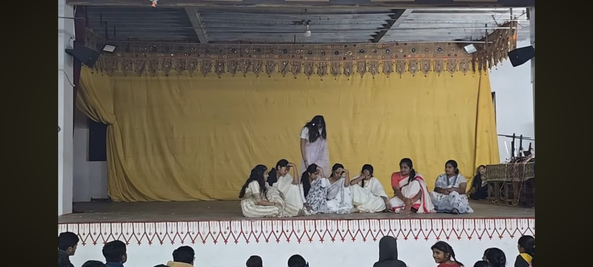

cultural impact
Participated in a student-led theatrical performance that celebrated Indian traditions and social values. From script preparation to stage presentation, the experience strengthened teamwork, creativity, confidence, and cultural appreciation.